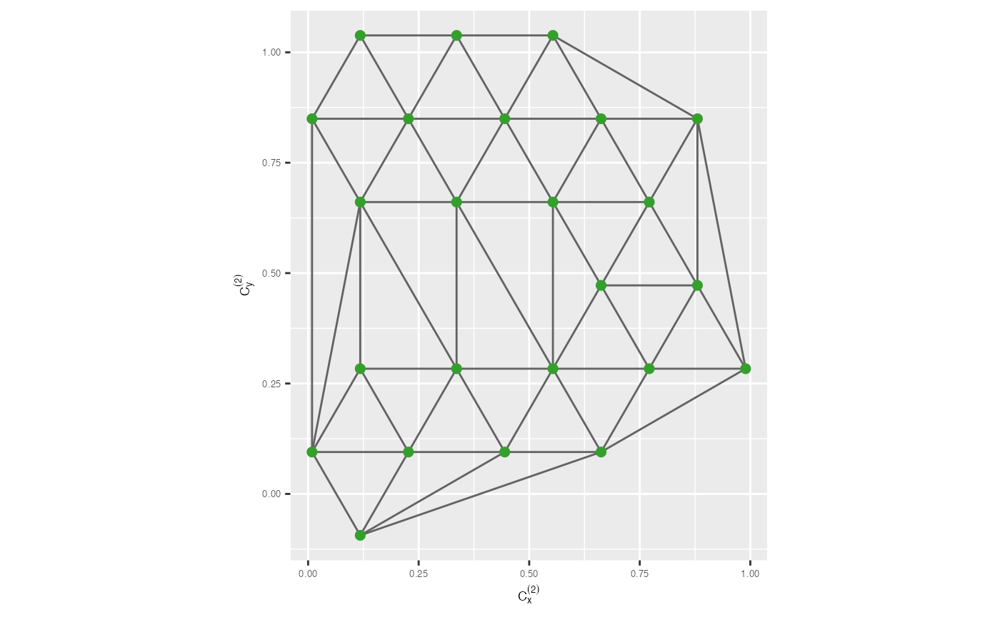
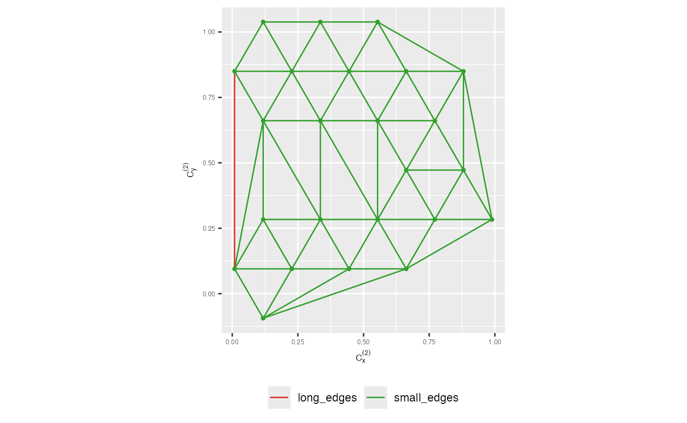
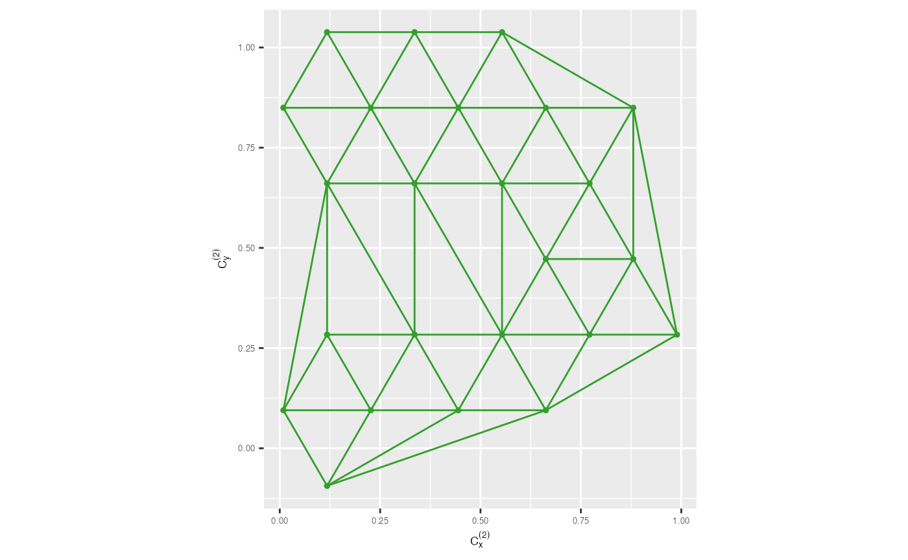

2. Algorithm for visualising the model overlaid on high-dimensional data
Source:vignettes/quollr2algo.Rmd
quollr2algo.RmdIn here, we’ll walk through the algorithm for preprocessing 2D embedding data to construct a model overlaid with high-dimensional data.
The algorithm consists of two steps. First, construct the model in 2D space. Second, lift the model into high-dimensions. Therefore, to begin the process, first you need to know how the 2D model is constructed.
Construct the 2D model
Binning the data
To construct the model in the 2D space, first you need to hexagonally bins the 2D layout. Discussed in details in 3. Algorithm for binning data.
r2 <- diff(range(s_curve_noise_umap$UMAP2))/diff(range(s_curve_noise_umap$UMAP1))
hb_obj <- hex_binning(data = s_curve_noise_umap_scaled, bin1 = 6, r2 = r2)
all_centroids_df <- hb_obj$centroids
counts_df <- hb_obj$std_ctsObtain bin centroids
Nest step is to obtain the hexagonal bin centroid coordinates
(all_centroids_df) and standard number of points within
each hexagon (counts_df). Then, you can generate tibble
which gives hexagonal ID, centroid coordinates and standard counts where
data exists.
df_bin_centroids <- extract_hexbin_centroids(centroids_df = all_centroids_df,
counts_df = counts_df) |>
filter(drop_empty == FALSE)
glimpse(df_bin_centroids)
#> Rows: 21
#> Columns: 6
#> $ hexID <int> 7, 8, 14, 15, 19, 20, 21, 28, 33, 34, 41, 46, 47, 53, 59, 6…
#> $ c_x <dbl> 0.01168629, 0.23505886, 0.12337257, 0.34674515, 0.01168629,…
#> $ c_y <dbl> -0.00849512, -0.00849512, 0.18495120, 0.18495120, 0.3783975…
#> $ bin_counts <int> 2, 6, 3, 3, 6, 3, 2, 1, 2, 7, 6, 3, 4, 1, 3, 1, 5, 6, 3, 6,…
#> $ std_counts <dbl> 0.2857143, 0.8571429, 0.4285714, 0.4285714, 0.8571429, 0.42…
#> $ drop_empty <lgl> FALSE, FALSE, FALSE, FALSE, FALSE, FALSE, FALSE, FALSE, FAL…Remove low density hexagons
One of the parameters that you need to control is that the benchmark value to remove low density hexagons. The default value is the first quartile of the standardise counts.
benchmark_value_rm_lwd <- quantile(df_bin_centroids$std_counts,
probs = c(0,0.25,0.5,0.75,1), names = FALSE)[2]
benchmark_value_rm_lwd
#> [1] 0.2857143There is two ways that you can follow after this. First, you can
remove the low density hexagons from df_bin_centroids and
proceed. Second, you can check whether is that actually reliable to
remove the identified low density hexagons by looking at their
neighboring bins and if so remove them and proceed. In here, let’s do
with second option.
Here, you need to obtain the low density hexagons.
df_bin_centroids_low <- df_bin_centroids |>
filter(std_counts <= benchmark_value_rm_lwd)
glimpse(df_bin_centroids_low)
#> Rows: 7
#> Columns: 6
#> $ hexID <int> 7, 21, 28, 33, 53, 64, 77
#> $ c_x <dbl> 0.01168629, 0.45843143, 0.57011772, 0.45843143, 0.79349029,…
#> $ c_y <dbl> -0.00849512, 0.37839752, 0.57184385, 0.76529017, 1.34562914…
#> $ bin_counts <int> 2, 2, 1, 2, 1, 1, 2
#> $ std_counts <dbl> 0.2857143, 0.2857143, 0.1428571, 0.2857143, 0.1428571, 0.14…
#> $ drop_empty <lgl> FALSE, FALSE, FALSE, FALSE, FALSE, FALSE, FALSENext, check the neighboring bins of low-density hexagons and decide which should actually need to remove.
identify_rm_bins <- find_low_dens_hex(df_bin_centroids_all = df_bin_centroids,
bin1 = 6,
df_bin_centroids_low = df_bin_centroids_low)
identify_rm_bins
#> [1] 21As you have seen, even though there are low density hexagons, it’s
not a good decision to remove them. Therefore, let’s use the same
df_bin_centroids as before.
Triangulate bin centroids
Then, you need to triangulate the bin centroids.
tr1_object <- tri_bin_centroids(hex_df = df_bin_centroids, x = "c_x", y = "c_y")
str(tr1_object)
#> List of 11
#> $ n : int 21
#> $ x : num [1:21] 0.0117 0.2351 0.1234 0.3467 0.0117 ...
#> $ y : num [1:21] -0.0085 -0.0085 0.185 0.185 0.3784 ...
#> $ nt : int 29
#> $ trlist: int [1:29, 1:9] 1 4 5 3 3 7 7 7 7 6 ...
#> ..- attr(*, "dimnames")=List of 2
#> .. ..$ : NULL
#> .. ..$ : chr [1:9] "i1" "i2" "i3" "j1" ...
#> $ cclist: num [1:29, 1:5] 0.123 0.235 -0.1 0.123 0.235 ...
#> ..- attr(*, "dimnames")=List of 2
#> .. ..$ : NULL
#> .. ..$ : chr [1:5] "x" "y" "r" "area" ...
#> $ nchull: int 11
#> $ chull : int [1:11] 1 2 10 11 13 18 20 21 19 16 ...
#> $ narcs : int 49
#> $ arcs : int [1:49, 1:2] 2 3 1 2 4 3 5 6 3 4 ...
#> ..- attr(*, "dimnames")=List of 2
#> .. ..$ : NULL
#> .. ..$ : chr [1:2] "from" "to"
#> $ call : language tri.mesh(x = hex_df[[rlang::as_string(rlang::sym(x))]], y = hex_df[[rlang::as_string(rlang::sym(y))]])
#> - attr(*, "class")= chr "triSht"To visualize the results, simply use geom_trimesh() and
provide the hexagonal bin centroid coordinates. This will display the
triangular mesh for you to examine.
trimesh <- ggplot(df_bin_centroids, aes(x = c_x, y = c_y)) +
geom_trimesh() +
coord_equal() +
xlab(expression(C[x]^{(2)})) + ylab(expression(C[y]^{(2)})) +
theme(axis.text = element_text(size = 5),
axis.title = element_text(size = 7))
trimesh
Create the wireframe in 2D
To build the wireframe in 2D, you’ll need to identify which vertices
are connected. You can obtain this by passing the triangular object to
the gen_edges function, which will provide information on
the existing edges and the connected vertices.
tr_from_to_df <- gen_edges(tri_object = tr1_object)
glimpse(tr_from_to_df)
#> Rows: 49
#> Columns: 6
#> $ from <int> 1, 3, 1, 3, 6, 2, 7, 7, 6, 9, 7, 9, 9, 9, 12, 5, 12, 14, 12, 16…
#> $ to <int> 2, 4, 5, 6, 7, 7, 9, 8, 9, 10, 10, 11, 16, 12, 13, 16, 14, 15, …
#> $ x_from <dbl> 0.01168629, 0.12337257, 0.01168629, 0.12337257, 0.23505886, 0.2…
#> $ y_from <dbl> -0.00849512, 0.18495120, -0.00849512, 0.18495120, 0.37839752, -…
#> $ x_to <dbl> 0.23505886, 0.34674515, 0.01168629, 0.23505886, 0.45843143, 0.4…
#> $ y_to <dbl> -0.00849512, 0.18495120, 0.37839752, 0.37839752, 0.37839752, 0.…Remove long edges
Another important parameter in this algorithm is the benchmark value for removing long edges. To compute this value, you first need to generate the 2D Euclidean distance dataset for the edges.
distance_df <- cal_2d_dist(tr_coord_df = tr_from_to_df, start_x = "x_from",
start_y = "y_from", end_x = "x_to", end_y = "y_to",
select_vars = c("from", "to", "distance"))
glimpse(distance_df)
#> Rows: 49
#> Columns: 3
#> $ from <int> 1, 3, 1, 3, 6, 2, 7, 7, 6, 9, 7, 9, 9, 9, 12, 5, 12, 14, 12, …
#> $ to <int> 2, 4, 5, 6, 7, 7, 9, 8, 9, 10, 10, 11, 16, 12, 13, 16, 14, 15…
#> $ distance <dbl> 0.2233726, 0.2233726, 0.3868926, 0.2233726, 0.2233726, 0.4467…Then, you can use the find_lg_benchmark() function to
compute a default benchmark value to remove long edges. However, this
default value may need adjustment for a better representation. In here,
used the benchmark value as
.
benchmark <- find_lg_benchmark(distance_edges = distance_df,
distance_col = "distance")
benchmark
#> [1] 0.387To visualize the results, you can use vis_lg_mesh() and
vis_rmlg_mesh(). These functions enable you to observe the
wireframe in 2D obtained from the algorithm’s computations.
trimesh_coloured <- vis_lg_mesh(distance_edges = distance_df,
benchmark_value = 0.75,
tr_coord_df = tr_from_to_df,
distance_col = "distance") +
xlab(expression(C[x]^{(2)})) + ylab(expression(C[y]^{(2)})) +
theme(axis.text = element_text(size = 5),
axis.title = element_text(size = 7),
legend.position = "bottom",
legend.title = element_blank())
trimesh_coloured
trimesh_removed <- vis_rmlg_mesh(distance_edges = distance_df,
benchmark_value = 0.75,
tr_coord_df = tr_from_to_df,
distance_col = "distance") +
xlab(expression(C[x]^{(2)})) + ylab(expression(C[y]^{(2)})) +
theme(axis.text = element_text(size = 5),
axis.title = element_text(size = 7))
trimesh_removed
Lift the model into high-dimensions
To lift the constructed model into high-dimensions, you need to map the 2D hexagonal bin centroids to high-dimensions. To do that, first, you need to obtain the data set which have the 2D embedding with their corresponding hexagonal bin IDs.
umap_data_with_hb_id <- hb_obj$data_hb_id
glimpse(umap_data_with_hb_id)
#> Rows: 75
#> Columns: 4
#> $ UMAP1 <dbl> 0.08044271, 0.73857864, 0.83992020, 0.16719939, 0.26292782, 0.83…
#> $ UMAP2 <dbl> 0.32004020, 1.00242397, 1.08361077, 0.04321660, 0.39843158, 2.00…
#> $ ID <int> 1, 2, 3, 4, 6, 7, 8, 9, 11, 12, 14, 15, 16, 17, 19, 20, 21, 22, …
#> $ hb_id <int> 19, 41, 47, 8, 20, 71, 41, 34, 41, 71, 34, 19, 66, 14, 34, 59, 2…Next, you need to create a data set with the high-dimensional data and the 2D embedding with hexagonal bin IDs.
df_all <- dplyr::bind_cols(s_curve_noise_training |> dplyr::select(-ID), umap_data_with_hb_id)
glimpse(df_all)
#> Rows: 75
#> Columns: 11
#> $ x1 <dbl> -0.11970232, -0.04921160, -0.77446658, -0.60566654, 0.81769684, …
#> $ x2 <dbl> 0.113792407, 0.822087939, 0.242750516, 1.955211672, 0.038841104,…
#> $ x3 <dbl> -1.9928098283, 0.0012116250, 0.3673851752, -1.7957185683, -1.575…
#> $ x4 <dbl> -0.002456044, 0.016093371, -0.019782622, 0.013202535, 0.00253174…
#> $ x5 <dbl> -0.0178407958, 0.0096807744, 0.0040810928, -0.0004790821, 0.0016…
#> $ x6 <dbl> -0.018086239, -0.083434181, -0.034917009, -0.004777390, 0.078094…
#> $ x7 <dbl> -0.0031710756, 0.0022970115, -0.0091095194, -0.0084291649, -0.00…
#> $ UMAP1 <dbl> 0.08044271, 0.73857864, 0.83992020, 0.16719939, 0.26292782, 0.83…
#> $ UMAP2 <dbl> 0.32004020, 1.00242397, 1.08361077, 0.04321660, 0.39843158, 2.00…
#> $ ID <int> 1, 2, 3, 4, 6, 7, 8, 9, 11, 12, 14, 15, 16, 17, 19, 20, 21, 22, …
#> $ hb_id <int> 19, 41, 47, 8, 20, 71, 41, 34, 41, 71, 34, 19, 66, 14, 34, 59, 2…Then, use avg_highd_data() to obtain the
high-dimensional coordinates of the model.
df_bin <- avg_highd_data(data = df_all, col_start = "x")
glimpse(df_bin)
#> Rows: 21
#> Columns: 8
#> $ hb_id <int> 7, 8, 14, 15, 19, 20, 21, 28, 33, 34, 41, 46, 47, 53, 59, 64, 65…
#> $ x1 <dbl> -0.986556623, -0.455487558, -0.314644339, 0.491088106, -0.297173…
#> $ x2 <dbl> 1.3783243, 1.7036821, 0.6629215, 1.5087063, 0.1869788, 0.3461379…
#> $ x3 <dbl> -1.161042886, -1.838857386, -1.884649967, -1.860243610, -1.92898…
#> $ x4 <dbl> 0.0015608344, 0.0079065593, 0.0013630680, 0.0114082140, 0.001158…
#> $ x5 <dbl> 0.0111715792, -0.0010972664, 0.0023070022, -0.0106486637, -0.002…
#> $ x6 <dbl> -0.0293085021, 0.0003311267, -0.0669478072, -0.0291072085, -0.02…
#> $ x7 <dbl> 0.0013513495, -0.0025716567, -0.0011313813, -0.0003666036, -0.00…Result
Finally, to visualise the model overlaid with the high-dimensional
data, you initially need to pass the data set with the high-dimensional
data and the 2D embedding with hexagonal bin IDs (df_all),
high-dimensional mapping of hexagonal bin centroids
(df_bin), 2D hexagonal bin coordinates
(df_bin_centroids), and wireframe data
(distance_df).
tour1 <- show_langevitour(df = df_all, df_b = df_bin,
df_b_with_center_data = df_bin_centroids,
benchmark_value = 0.75,
distance_df = distance_df, distance_col = "distance",
use_default_benchmark_val = FALSE, col_start = "x")
tour1